Every moonapi application routes a request the same way: through the layer stack, into the router, through any security enforcers, to your handler, and back out through the response filters. Step through the pipeline, then try your own request against a small application.
A request crosses several libraries on the way in, and the same ones on the way out. The iris boxes are this package's; the neutral ones are the libraries beside it and the server that feeds it. The drawing is Mermaid's, from the source kept under it — and the same path is written out in characters for a reader who cannot see the image.

bytes in: socket, TLS 1.3, HTTP/1.1 or HTTP/2 mooncat
|
v
ASGI scope, receive, send moonasgi
|
v
layers, outermost first: moonasgi
gzip, CORS, trusted hosts, https redirect moonzip
|
v
App::middleware - the request, whole moonapi
|
v
router: mount, docs, WebSocket, path match moonapi
|
v
hoops: middleware on a route node moonapi
|
v
security requirement - the token is verified here moonapi
mooncred
|
v
dependencies, then validation -> 422 moonapi
|
v
handler: Context in, Response out moonapi
|
v
bytes out: the same layers, in reverse mooncat
Press Run request to send a sample request through the stages. Each stage lights up as the request reaches it; the explanation on the right updates to match.
A moonapi application is a single object that compiles to a server. The layers wrap the router; the router matches the path and method; security enforcers verify the caller; the handler builds the response; and the response passes back through the layers before it is sent.
This tiny application has a handful of routes. Type a path and choose a method; the simulator applies the real 404/405 rules and shows what the application would answer.
405 Method Not Allowed and lists the allowed methods in the Allow header. Only when no route owns the path at all does it answer 404 Not Found.
Middleware wraps the router on the way in and the response on the way out — CORS, gzip, logging and custom filters all live here.
Matches the path and method, binds {id} parameters, and decides 405 versus 404 when nothing fits.
Before the handler runs, the schemes declared on the route are enforced; an unauthenticated caller never reaches your code.
Your function receives a typed context and returns a response — text, html, json, a redirect, or a stream.
A raised exception or a particular status code can be caught and reshaped by handlers you register on the application.
Mount a sub-application, such as static files or a whole router, under its own prefix without touching the main routes.